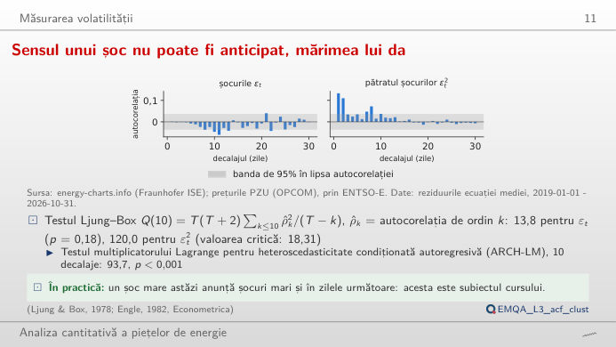
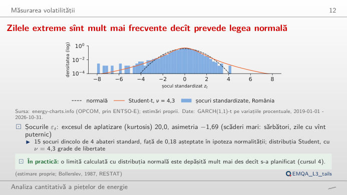
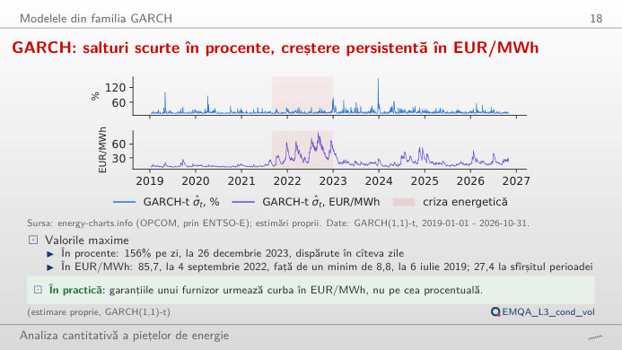
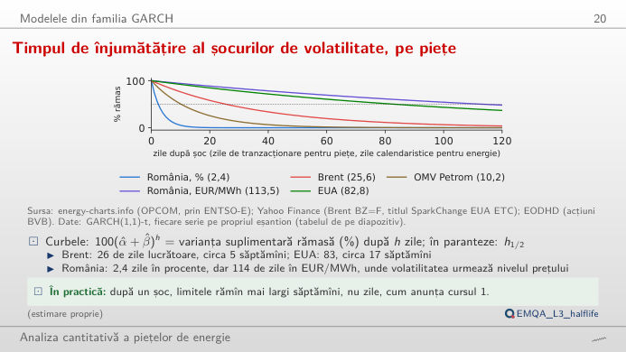
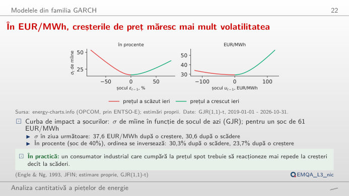
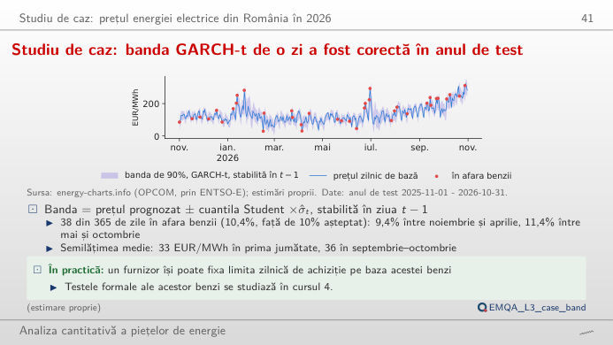

În stînga este slide-ul din curs, în dreapta aceeași figură, recalculată în browser din datele cursului (data/clean) cînd modificați un control. Butonul ▶ modifică parametrul principal pas cu pas. Sub fiecare figură: o sinteză numerică, o întrebare pentru sală și Quantlet-ul cu codul figurii. GARCH = heteroscedasticitate condiționată autoregresivă generalizată; șocurile sînt reziduurile ecuației mediei din curs (constantă, AR(1..7) și variabile dummy pentru ziua săptămînii).
Măsurarea volatilității · Modelele din familia GARCH · Studiu de caz: prețul energiei electrice din România în 2026
Măsurarea volatilității
Gruparea volatilității: autocorelația șocurilor și a pătratelor lor

Răspuns
În pătratul șocurilor. Pe tot eșantionul, autocorelația de ordinul întîi a șocurilor în % este 0,001, dar cea a pătratului șocurilor este 0,133, iar statistica Ljung–Box pentru zece laguri crește de la 13,8 (p = 0,18) la 120,0. Mișcările mari, de orice semn, urmează după mișcări mari: mărimea unui șoc este previzibilă, chiar dacă semnul său nu este. Treceți la EUR/MWh: pătratele șocurilor sînt mult mai autocorelate (Ljung–Box 1.519,5), deoarece nivelul prețului a urcat de la circa 40 la peste 400 EUR/MWh.
Zilele extreme sînt mult mai frecvente decît prevede legea normală

Răspuns
Circa 0,18, adică niciunul: coada normalei dincolo de 4 abateri standard are probabilitatea 6,3 × 10⁻⁵. Chiar după ce GARCH elimină gruparea, cozile rămîn groase; repartiția Student-t estimată, cu ν = 4,27 grade de libertate, se așteaptă la 12,7. Mutați ν: cu un ν mic, curba Student-t ajunge în clasele îndepărtate ale histogramei, cu ν peste 30 este apropiată de normală.
Modelele din familia GARCH
GARCH: salturi scurte în procente, valori mari durabile în EUR/MWh

Răspuns
Cu varianța de lungă durată fixată la estimația ei, persistența α + β crește de la 0,75 la 0,99: șocurile se sting încet, traiectoria devine netedă și rămîne ridicată săptămîni întregi după un salt, iar timpul de înjumătățire al unui șoc crește de la 2,4 zile la circa 58 de zile. Log-verosimilitatea Student-t din sinteză scade: datele preferă o stingere mai rapidă. În EUR/MWh, chiar estimația este persistentă (α + β = 0,994, timp de înjumătățire 113,5 zile), deoarece nivelul prețului determină mărimea variațiilor.
Timpul de înjumătățire al șocurilor de volatilitate, pe piețe

Răspuns
Timpul de înjumătățire = ln 0,5 / ln(α + β): 25,6 zile de tranzacționare (circa cinci săptămîni) pentru Brent și 2,4 zile pentru energia electrică din România, în %. Un șoc al volatilității unei licitații zilnice se stinge în cîteva zile, unul al volatilității țițeiului în săptămîni. EUA (certificatele de emisii ale UE, 0,992, 82,8 zile de tranzacționare) și energia electrică din România în EUR/MWh (0,994, 113,5 zile) sînt cele mai persistente. Lîngă α + β = 1, o mică schimbare a persistenței mută mult timpul de înjumătățire.
În EUR/MWh, creșterile de preț măresc mai mult volatilitatea

Răspuns
La o scădere. GJR (Glosten–Jagannathan–Runkle) adaugă γ·ε² în zilele cu șoc negativ. Cu estimațiile din curs, un șoc de −2 abateri standard (−39,7%) dă un σ de a doua zi de 30,3%, iar un șoc de +2 abateri standard 23,7%. Pentru șocurile în EUR/MWh, estimația este γ = −0,13: acolo o creștere a prețului mărește volatilitatea mai mult decît o scădere, deoarece creșterile nivelului vin cu variații mai mari. Fixați γ = 0 pentru a regăsi curba simetrică GARCH.
Studiu de caz: prețul energiei electrice din România în 2026
Studiu de caz: banda GARCH-t de o zi a fost corectă în anul de test

Răspuns
Aproximativ: 10,4% în afară, față de 10% nominal. Volatilitatea istorică pe 30 de zile, cu o cuantilă normală, lasă și ea în afară 38 de zile (10,4%) la 90%, dar banda ei reacționează tîrziu la șocurile noi și scade brusc cînd un șoc mare iese din fereastra de 30 de zile. Schimbați acoperirea: la o acoperire mare, cuantila normală este prea îngustă pentru cozi groase. La 99%, banda istorică lasă în afară 13 zile (3,6%), banda GARCH-t 4 zile (1,1%); la 95%, 8,2% față de 6,3%.
Prețul zilnic de bază pentru ziua următoare în România: OPCOM PZU, prin energy-charts.info (Fraunhofer ISE), 2019-01-01 pînă la data-limită a cursului. Șocuri: reziduurile ecuației mediei estimate prin OLS (metoda celor mai mici pătrate) pe variația zilnică logaritmică (%) sau pe variația zilnică în EUR/MWh. Parametrii modelelor: estimații de verosimilitate maximă din lectures/L3/analysis_L3.py. Timpii de înjumătățire pentru piețe: GARCH(1,1)-t pe randamentele Brent, EUA (certificatele de emisii ale UE) și OMV Petrom (SNP). Prognozele din anul de test: Quantlet-ul EMQA_L3_case_band.